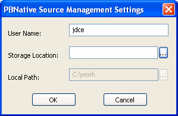
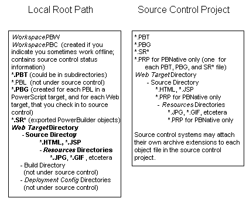

PowerBuilder provides a direct connection to external SCC-compliant source control systems. It no longer requires you to register PowerBuilder objects in a separate work PBL before you can check them into or out of the source control system.
For information on migrating PowerBuilder applications and objects previously checked into source control through a registered PBL, see "Migrating existing projects under source control".
Before you can perform any source control operations from PowerBuilder, you must set up a source control connection profile for your PowerBuilder workspace, either from the System Tree or from the Library painter. Even if you use the PBNative check in/check out utility, you must access source-controlled objects through an SCC interface that you define in the Workspace Properties dialog box.
The source control connection profile assigns a PowerBuilder workspace to a source control project. Setting up a source control project is usually the job of a project manager or administrator. See "Project manager's tasks".
 Creating a new source control project Although you can create a project in certain source control
systems directly from PowerBuilder, it is usually best to create
the project from the administrative tool for your source control
system before you create the connection profile in PowerBuilder.
Creating a new source control project Although you can create a project in certain source control
systems directly from PowerBuilder, it is usually best to create
the project from the administrative tool for your source control
system before you create the connection profile in PowerBuilder.
In PowerBuilder you can set up a source control connection profile at the workspace level only. Local and advanced connection options can be defined differently on each machine for PowerBuilder workspaces that contain the same targets.
Local connection options allow you to create a trace log to record all source control activity for your current workspace session. You can overwrite or preserve an existing log file for each session.
You can also make sure a comment is included for every file checked into source control from your local machine. If you select this connection option, the OK button on the Check In dialog box is disabled until you type a comment for all the objects you are checking in.
The following table lists the connection options you can use for each local connection profile:
Advanced connection options depend on the source control system you are using to store your workspace objects. Different options exist for different source control systems.
 Applicability of advanced options Some advanced options might not be implemented or might be
rendered inoperable by the PowerBuilder SCC API interface. For example,
if an advanced option allows you to make local files writable after
an Undo Check Out operation, PowerBuilder still creates read-only
files when reverting an object to the current version in source
control. (PowerBuilder might even delete these files if you selected
the Delete PowerBuilder Generated Object Files option.)
Applicability of advanced options Some advanced options might not be implemented or might be
rendered inoperable by the PowerBuilder SCC API interface. For example,
if an advanced option allows you to make local files writable after
an Undo Check Out operation, PowerBuilder still creates read-only
files when reverting an object to the current version in source
control. (PowerBuilder might even delete these files if you selected
the Delete PowerBuilder Generated Object Files option.)
 To set up a connection profile:
To set up a connection profile:
Right-click the Workspace object in the System Tree (or in the Tree view of the Library painter) and select Properties from the pop-up menu.
Select the Source Control tab from the Workspace Properties dialog box.
Select the system you want to use from the Source Control System drop-down list.
Only source control systems that are defined in your registry (HKEY_LOCAL_MACHINE\SOFTWARE\SourceCodeControlProvider\
InstalledSCCProviders)
appear in the drop-down list.
Type in your user name for the source control system.
Some source control systems use a login name from your registry rather than the user name that you enter here. For these systems (such as Perforce or PVCS), you can leave this field blank.
Click the ellipsis button next to the Project text box.
A dialog box from your source control system displays. Typically it allows you to select or create a source control project.
The dialog box displayed for PBNative is shown below:

Fill in the information required by your source control system and click OK.
The Project field on the Source Control page of the Workspace Properties dialog box is typically populated with the project name from the source control system you selected. However, some source control systems (such as Perforce or Vertical Sky) do not return a project name. For these systems, you can leave this field blank.
Type or select a path for the local root directory.
All the files that you check into and out of source control must reside in this path or in a subdirectory of this path.
(Option) Select the options you want for your local workspace connection to the source control server.
(Option) Click the Advanced button and make any changes you want to have apply to advanced options defined for your source control system.
The Advanced button might be grayed if you are not first connected to a source control server. If Advanced options are not supported for your source control system, you see only a splash screen for the system you selected and an OK button that you can click to return to the Workspace Properties dialog box.
Click Apply or click OK.
After a PowerBuilder workspace is assigned to a source control project through a connection profile, icons in the PowerBuilder System Tree display the source control status of all objects in the workspace. The same icons are also displayed for objects in the Library painter if the workspace to which they belong is the current workspace for PowerBuilder.
The icons and their meanings are described in Table 3-3 and Table 3-4.
Compound icons with a red check mark can display only if your SCC provider permits multiple user checkouts. These icons are described in the following table:
For more information on allowing multiple user checkouts, see "Checking objects out from source control".
Pop-up menus for each object in the workspace change dynamically to reflect the source control status of the object. For example, if the object is included in a source-controlled workspace but has not been registered to source control, the Add To Source Control menu item is visible and enabled in the object's pop-up menu. However, other source control menu items such as Check In and Show Differences are not visible until the object is added to source control.
Additional status functionality is available from the Entry menu of the Library painter. Depending on the source control system you are using, you can see the owner of an object and the name of the user who has the object checked out. For most source control systems, you can see the list of revisions, including any branch revisions, as well as version labels for each revision.
 Library painter selections When a painter is open, menu commands apply to the current
object or objects in the painter, not the current object in the
System Tree. This can get confusing with the Library painter in
particular, since Library painter views list objects only (much
like the System Tree), and do not provide a more detailed visual interface
for viewing current selections, as other painters do.
Library painter selections When a painter is open, menu commands apply to the current
object or objects in the painter, not the current object in the
System Tree. This can get confusing with the Library painter in
particular, since Library painter views list objects only (much
like the System Tree), and do not provide a more detailed visual interface
for viewing current selections, as other painters do.
 To view the status of source-controlled objects
To view the status of source-controlled objects
In a Library painter view, select the object (or objects) whose status you want to determine.
Select Entry>Source Control>Source Control Manager Properties.
A dialog box from your source control system displays. Typically it indicates if the selected file is checked in, or the name of the user who has the file checked out. It should also display the version number of the selected object.
 Displaying the version number in the Library painter You can display the version number of all files registered
in source control directly in the Library painter. You add a Version
Number column to the Library painter List view by making sure the
SCC Version Number option is selected in the Options dialog box
for the Library painter.
Displaying the version number in the Library painter You can display the version number of all files registered
in source control directly in the Library painter. You add a Version
Number column to the Library painter List view by making sure the
SCC Version Number option is selected in the Options dialog box
for the Library painter.
You can work offline and still see status information from the last time you were connected to source control. However, you cannot perform any source control operations while you are offline, and you cannot save changes to source-controlled objects that you did not check out from source control before you went offline.
To be able to work offline, you should select the option on the Source Control page of the Workspace Properties dialog box that indicates you sometimes work offline. If you select this option, a dialog box displays each time you open the workspace. The dialog box prompts you to select whether you want to work online or offline.
For more information about setting source control options for your workspace, see "Setting up a connection profile".
If you opt to work offline, PowerBuilder looks for (and imports) a PBC file in the local root directory. The PBC file is a text file that contains status information from the last time a workspace was connected to source control. PowerBuilder creates a PBC file only from a workspace that is connected to source control. Status information is added to the PBC file from expanded object nodes (in the System Tree or in a Library painter view) at the time you exit the workspace.
If a PBC file already exists for a workspace that is connected to source control, PowerBuilder merges status information from the current workspace session to status information already contained in the PBC file. Newer status information for an object replaces older status information for the same object, but older status information is not overwritten for objects in nodes that were not expanded during a subsequent workspace session.
You can back up the PBC file with current checkout and version information by selecting the Backup SCC Status Cache menu item from the Library painter Entry>Source Control menu, or from the pop-up menu on the current workspace item in the System Tree. The Library painter menu item is only enabled when the current workspace file is selected.
The Backup SCC Status Cache operation copies the entire contents of the refresh status cache to the PBC file in the local project path whether the status cache is dirty or valid. To assure a valid status cache, you can perform a Refresh Status operation on the entire workspace before backing up the SCC status cache.
For information about refreshing the status cache, see "Refreshing the status of objects".
PowerBuilder uses an array of object file names that it passes to a source control system in each of its SCC API requests. The SCC specification does not mention an upper limit to the number of files that can be passed in each request, but the default implementation in PowerBuilder limits SCC server requests to batches of 25 objects.
A PB.INI file setting allows you to override the 25-file limit on file names sent to the source control server in a batched request. You can make this change in the Library section of the PB.INI file by adding the following instruction:
SccMaxArraySize=nnwhere nn is the number of files you want PowerBuilder to include in its SCC API batch calls. Like other settings in the PB.INI file, the SccMaxArraySize parameter is not case sensitive.
When you connect to a source control system, PowerBuilder instantiates a Java VM by default. For certain SCC programs, such as Borland's StarTeam or Serena's TrackerLink, the Java VM instantiated by PowerBuilder conflicts with the Java VM instantiated by the SCC program. To prevent Java VM conflicts, you must add the following section and parameter setting to the PB.INI file:
[JavaVM]
CreateJavaVM=0
By adding this section and parameter setting to the PB.INI file, you prevent PowerBuilder from instantiating a Java VM when it connects to a source control system.
The following schema shows a directory structure for files in the local PowerBuilder workspace and on the source control server. Directories and files in the local root path that can be copied to the source control server from PowerBuilder are displayed in bold print. Asterisks indicate a variable name for a file and italic print indicates a variable name for a file or folder.

Typically, the source control server files are stored in a database but preserve the file system structure. Files in a Web target Build directory and in any deployment configuration directories can be regenerated automatically by building and deploying the files in the Source directory.
 Temporary files in local root path When you add or check in a PowerScript object to source control, PowerBuilder
first exports the object as a temporary file (*.SR*)
to your local target directory. For some source control systems,
you might choose to delete temporary files from the local root path.
Temporary files in local root path When you add or check in a PowerScript object to source control, PowerBuilder
first exports the object as a temporary file (*.SR*)
to your local target directory. For some source control systems,
you might choose to delete temporary files from the local root path.